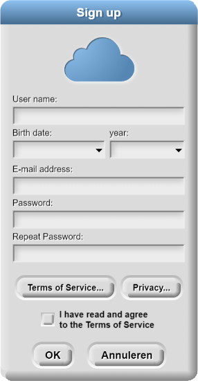
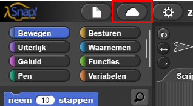

Beginnen met Snap!
In deze les programmeer je jouw eigen app die je kan spelen op je telefoon en kan delen met anderen.
Op deze pagina leer je hoe je je eigen account aanmaakt en hoe je kunt in- en uitloggen.
Een Account Aanmaken

- Klik hier om Snap! te openen.
- Klik op het tandwiel-menu linksboven om je taal in te stellen. De bovenste optie is "Language...". Selecteer hier je voorkeurstaal.
-
Klik in het Snap! window op het wolk-menu (
 ),
selecteer "Registreren...", en volg de instructies.
),
selecteer "Registreren...", en volg de instructies.

Je krijgt nu een e-mail. Klik in de e-mail op de link om je account te bevestigen. Dit kan je ook later doen.
Pas je wachtwoord aan via het wolk-menu
() als je dat wilt, nu of later.
Als je dit tijdens de les doet, zou je dit samen met een partner kunnen doen. Als jullie
allebei achter je eigen computer zitten, kan één van jullie Snap! openhouden en de
ander deze pagina. Als je een computer deelt, gebruik dan twee tabbladen.
In- en Uitloggen van Je Snap! Account
Als je Snap! gebruikt moet je altijd ingelogd zijn. Bekijk op deze manier of je ingelogd bent:
-
Klik op het wolk-menu in de werkbalk.
- Als er "Logout" staat, samen met je gebruikersnaam, dan ben je ingelogd.
- Als er de naam van iemand anders staat, dan moet je deze persoon uitloggen en zelf inloggen met je eigen gebruikersnaam.
- Anders, kies je "Inloggen..." en voer je je gebruikersnaam en wachtwoord in.
-
Klik op het woord Volgende (rechtsonderaan deze webpagina) om naar de volgende pagina te gaan.
Als je klaar bent, denk er dan aan om uit te loggen van Snap! (via het wolk-menu).